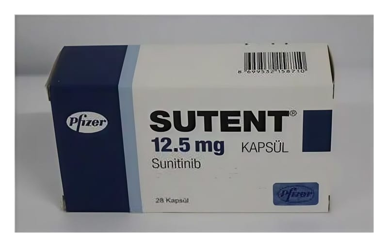

Sutent 12.5 mg Kapsül, 28 Adet

Ne için kullanılır
KT · Bölüm 1• SUTENT, kanser tedavisinde kullanılan bir ilaçtır. SUTENT, bu etkisini kanserli hücrelerin büyümesi ve yayılmasına yol açan bir grup proteinin işlevini önleyerek gerçekleştirir.
• SUTENT, Alüminyum/PVC/Aclar blister içinde, 28 kapsül şeklinde bulunur.
• SUTENT kapsülleri, iki parçalı, opak baskılı, gövdesi ve kapağı İsveç turuncusu renkli sert jelatin kapsüllerdir, sarı ile turuncu arası renkte granül içerirler. Herbir SUTENT kapsülü 12,5 mg sunitinibe eşdeğer sunitinib malat içerir. Bu ilacı kullanmaya başlamadan önce bu KULLANMA TALİMATINI dikkatlice okuyunuz, çünkü sizin için önemli bilgiler içermektedir. • Bu kullanma talimatını saklayınız. Daha sonra tekrar okumaya ihtiyaç duyabilirsiniz. • Eğer ilave sorularınız olursa, lütfen doktorunuza veya eczacınıza danışınız. • Bu ilaç kişisel olarak sizin için reçete edilmiştir, başkalarına vermeyiniz. • Bu ilacın kullanımı sırasında, doktora veya hastaneye gittiğinizde doktorunuza bu ilacı kullandığınızı söyleyiniz. • Bu talimatta yazılanlara aynen uyunuz. İlaç hakkında size önerilen dozun dışında yüksek veya düşük doz kullanmayınız.
• SUTENT böbrek hücresi kanseri ve mide ve bağırsak duvarının yapısını destekleyen dokunun kötü huylu tümörlerinin ve pankreasın bazı kanserlerinin tedavisinde uzman bir doktor tarafından reçetelendirilir.
Metastatik Renal Hücreli Kanser SUTENT, böbrek tübül hücrelerinde gelişen böbrek hücresi kanserinin tedavisi için kullanılır.
Gastrointestinal Stromal Tümör SUTENT, gastrointestinal stromal tümör tedavisinde kullanılır. Bu tümör, mide ve bağırsak duvarının yapısını destekleyen dokunun kötü huylu tümörüdür. Bu dokudaki kontrol dışı hücre büyümesinden kaynaklanır. SUTENT bu hücrelerin büyümesini önler. Bu hücrelerin beslenmesi için gereken damar oluşumunu engeller.
Pankreatik Nöroendokrin Tümör SUTENT, somatostatin ve türevleri tedavisi sonrası hastalığı ilerlemiş, ameliyatla çıkarabilecek durumda olmayan, yayılmış pankreatik nöroendokrin tümörlerin tedavisinde kullanılır. Bu tümör, pankreasın hormon salgılayan hücrelerinden köken alan seyrek görülen bir kanserdir.
SUTENT ile veya neden size verildiği ile ilgili sorularınızı doktorunuza danışınız.